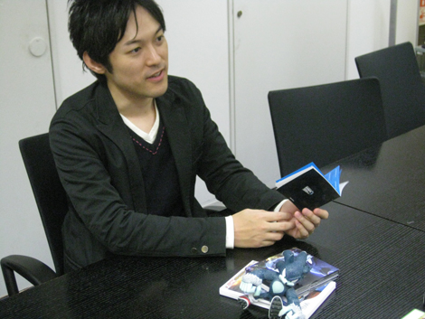
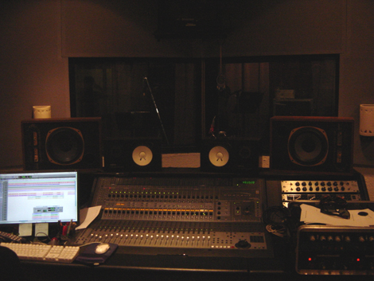
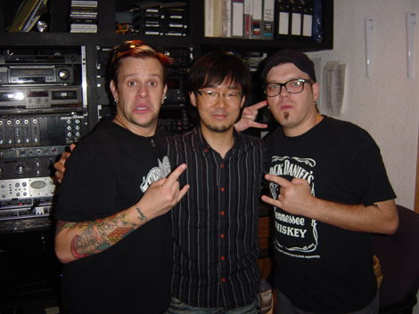

第９回 橋本×大谷 サウンド対談 その２「主題歌」
2009年02月25日
大谷 ： さて、今回は、主題歌『Endless Possibility』についての話をしてみたいと思います。
橋本 ： 来ましたね！『Endless Possibility』！
私、大好きですあの曲。
社内スタッフの間でもすごい「ポジティブで良い曲だね～」って、ファンが多いですよ。
大谷 ： ありがとうございます。そういってもらえると素直に嬉しいですね。
やはり主題歌を楽しみにしてくれているファンの方も多いですから、
新曲をつくらないわけにはいかないと。
橋本 ： そうですね。
歴代の主題歌も人気ですし、それに対するプレッシャーとかありませんでしたか？
大谷 ： プレッシャーはないと言えば嘘になります。
が、今回ちょっとだけ違う点は、フレーズとしてのメインテーマとなる曲は別に存在するわけです。
橋本 ： ええ、そうでしたね。
大谷 ： となると、主題歌を作る上でクリアしなければならない条件が微妙に変わってくるわけです。
橋本 ： どんな風に変わりましたか？
大谷 ： 独立した主題歌として、純粋に「歌にしか出来ない事」を追うことが出来ました。
例えば、メロディーをアレンジして色々な箇所に使えるようにとか、想定しておくべき事が少なくなり、作る上での自由度が高くなりました。
制約が少ない分、プレッシャーもちょっとだけ少なかったです。
橋本 ： なるほど。
主題歌として、純粋に良い曲を追求することに集中できたわけですね。
大谷 ： そうですね。
メロディーとしのテーマの役割も主題歌が兼任するとなると、作り方は変わってきます。
が、オーケストラテーマ曲と主題歌の役割分担がはっきり出来たことが良かったと思います。
橋本 ： 制作上の制約が少なくて比較的やりやすかったことは分かりました。
その上で、実際あの曲ができあがるまでの苦労などはありましたか？
結構スムーズにできました？
大谷 ： いつも作曲をする時は、これから作る曲が満たすべきキーワードを挙げて行くんです。
今回の主題歌の場合は、ポップで、テンポが早くて、明るくて、前向きな感じで、やんちゃな感じもあって、などなど、その上で曲のイメージ膨らませていきます。
橋本 ： へえ～。
大谷 ： 次はもう少し、音楽的なキーワードを出していきます。
橋本 ： ほうほう、どんな感じですか？
大谷 ： 「生バンドだけど、打ち込みのニュアンスもあって」
「ギターはストレートにかき鳴らす感じで」とか、「メロディーはなるべくシンプルに」……とかですね。
方向性を絞り込んでいるようでいて、実は徐々に自分で出したキーワードに縛られていくんですが。
あとは、その曲がどういった場面で使用されるのか、その際にどんな印象が欲しいかイメージしていきます。
予告編映像に合わせて流れるのであれば、「ぱっと聴きのインパクト」とか、考えといた方がよいことは事前にとことん考えておきます。
……で、キーワードはいいから
一体、いつになったら曲が出来るんだよっ！という話ですよね（笑）
橋本 ： ははは（笑）
大谷 ： 他にも「新作感」とか、一通りのキーワードを頭の片隅に置いてからようやく楽器を手にします。
この曲の場合はギターでした。
キーワードを並べるのは、曲がうっかり変な方向に行かないためですね。
橋本 ： ゲームを作るときと同じですね。
大谷 ： 変わらないと思います。
指針となる楽曲コンセプトを明確にしておくことですね。
とはいえ、やはり音楽なので理屈では説明出来ない感覚的な部分も大事にしたい。
後は自分のテンションを上げて勢いで一気に作ってしまします。
『Endless Possibility』の場合は、迷う事なく一気に形になりました。
橋本 ： ああ、私は音楽のことは分かりませんが、その感覚は分かる気がします。
ちょっとずつためていくより、
集中して短期間にぐぉ～っとやったほうが
良いものができる事が多いですよね。
私の場合、資料作りだったり、プログラムだったりですが。
大谷 ： そうこうするうちに、デモバージョンが完成するわけですが……。
まだ歌の入ってない最初のデモを聴いたときはどうでしたか？
橋本 ： あ～……最初に聴いた時は、完成形と比べて、大分イメージは異なっている印象でした。
歌声の部分の代わりに電子音で再生されていたので、正直なところ、どう判断すれば良いか難しく思いました。
知っている歌もカラオケになると印象が違うのと似たような感じといいますか。

大谷 ： 歌のガイドとなるメロディーラインが入っているのですが、確かに、曲調は判断出来てもそこから歌声をイメージするのは難しいかもしれませんね。
橋本 ： ＢＧＭの場合は聴いたものと完成形はかなり近いですが、歌の場合は相当違いますね。それが難しいなと思いました。
大谷 ： そうですね、なんせこのデモの段階では、「こういう声のヴォーカルが欲しい！」というイメージはあってもまだ、誰が歌うのか決まってないですらね。歌詞もまだ存在していません。
橋本 ： でしたね。どんな歌手がどんな感じの歌を歌ってくれるのか、ワクワクドキドキな感じでした。
大谷 ： そうですね。歌い手によって印象は大きく変わりますからね。 この時のデモは、メロディーやリズム（テンポ、ノリ）など、曲の雰囲気がわかるデモバージョンという感じですね。
橋本 ： その、歌の印象を左右する重要な歌手の選定はどんなプロセスで決まりましたか？
大谷 ： はい、作曲しながら、どういう声のシンガーに歌ってもらいたいか頭の中に描いていました。
橋本 ： どんなイメージでした？
大谷 ： 明るめのトーンでポップな声のパンキッシュなヴォーカルをイメージしていました。
SWAでは、シンガーのコーディネーターとして動いてくれた瀬上（注1）に今言ったようなイメージを伝えたんです。
橋本 ： なるほど。そこからは瀬上さんの出番なわけですね。
大谷 ： はい、 曲のイメージにマッチしつつ、このプロジェクトに興味を持ってくれそうな人を探してもらいました。
そこで名前が挙がって来たのが「ボウリング・フォー・スープ」（注2）のジャレット・リディックです。
大谷 ： まずは、彼にコンタクトをとってみようということになり、打診をしてもらいました。
ちょうど僕らがそのような行動を起こし始めた頃、「ボウリング・フォー・スープ」が幕張で開催されるフェスティバル公演で来日する機会がありました。
橋本 ： ちょうど良いタイミングですね。
大谷 ： そのタイミングで一度会ってみようということになりアポイントをとりました。
橋本 ： 会ってみてどうでした？
大谷 ： 出来たばかりのデモバージョンと、開発途中のゲームプレイ映像をノートパソコンに入れて持ち込み、ラフな打ち合わせをしたんです。
ジャレットは超気さくなんですよ！
橋本 ： いいですね、気さくなの。
大谷 ： そうなんです。
ソニックのことはもちろん知ってくれていたので、それも大きいとは思いますが、とてもフレンドリーでした。
まずは、SWAの最初に公開されたトレーラー映像をみてもらい、簡単にゲームやストーリーの説明をした後に曲のデモを聴いてもらました。
サウンドトラックのブックレットにも書きましたが、ジャレットは聴き始めてすぐに「はやっ！」と言いましたね。テンポのことですね。
途中で再生を止めることなく、フルコーラス（約4分）最後まできっちり聴き終えたあと、僕に「Good Job!」と言ってくれました。
橋本 ： お、それはよかった（笑）
大谷 ： 第一印象は良かったみたいです。
橋本 ： 順調な滑り出しですね。
大谷 ： はい、曲のキーや歌詞についてなど、何点か確認をして、その日は別れました。
後日、正式にジャレットがリードヴォーカルを引き受けてくれることになり、レコーディングの日程や歌詞の内容についての進行はメールのやりとりで進めていきました。
橋本 ： 歌詞はどういうオーダーをしましたか？
大谷 ： 歌詞については、いくつかのキーワードを伝えました。
「ポジティブなメッセージで、誰もが共感できるような一般的なテーマ」ということですね。
RAPのパートは、ソニックの新たな一面＝ウェアホッグを連想させるようなキーワードを挙げました。
ジャレットからメールで送られて来たメールで歌詞をチェックしつつ、何回かのやりとりの後に歌詞が完成しました。
この時に初めて『Endless Possibility』というタイトルに決まります。
橋本 ： すっごく良いタイトルだとおもいます！
大谷 ： そうですね、いいタイトルですよね。
「ソニック」という作品のことを考えた時に、とてもばっちりなタイトルだなと思いました。
橋本 ： 「無限の可能性」というのは凄くソニックに合ってますよね！
歌詞もそうですが、超ポジティブで聴いていると元気が出てきます。
社内でもいろいろな人から「あの歌いいですねえ」って言われましたよ。
大谷 ： それは、うれしいですね。
橋本 ： アメリカのスタッフも気に入ってました。
大谷 ： そういうイイ話、僕の耳には届いてきてないんですが……。（笑）
橋本 ： ははは、まだ言ってませんでした（笑）
大谷 ： 早く知らせて下さいよ～！
橋本 ： ははは、すみません（笑）
大谷 ： 話は戻って、曲の土台となるバンド（ドラム、ベース、ギター）の収録を日本で終えた後、ヴォーカルを録るため、L.A.のとあるスタジオに向かいました。

大谷 ： 「聴いていると元気が出る」という話が出ましたが、
収録の最中も、収録の合間も、終わって帰る時も、ジャレットとバックコーラスで参加してくれた「ボウリング・フォー・スープ」のベーシストでもあるエリックはめちゃめちゃ元気なんですよ！
橋本 ： イメージのまんまなんですね。
大谷 ： まんまなんです。
そのパワーがそのまま曲に乗っかっているといっても過言ではないくらいです。
歌にしか出来ないことですよね。
橋本 ： はい、しっかりジャレットのエネルギーが伝わって来ますね。
歌詞と歌声をあわせてに２重にポジティブなパワーをもらえる歌だと思いました。

大谷 ： とても良い形でコラボレーションが出来たと思います。
橋本 ： そうですね、素晴らしい歌になったと思います。
最初に完成版を聴かせてもらったとき「キター！」って思いました。
こうやってデモから完成版へと変化するのだなと感心しました。
大谷 ： 覚えてますよ。その時の橋本さんの反応。
電話で「なんでこんなに歌がばっちりはまったんですか？」って聞かれましたもん。
橋本 ： はははははは！
そんなこと言ってたんですね！
大谷 ： 言ってましたよ！変な質問ですよね（笑）
橋本 ： よっぽど興奮してたんでしょう（笑）
大谷 ： レコーディングスタッフ以外で、最初に聴いたのが橋本さんですからね。
ああ、よかったと思いました。
橋本 ： じゃあ最初の感想だったわけですね。
大谷 ： そうです。
橋本 ： それが超良い反応だったと。（笑）
大谷 ： はい、それに対して、自分がなんと答えたのか覚えてないんですが（笑）
曲が完成するや否や、すぐに世に出ることが決まっていたので、みんな喜んでくれるかな～とか考えてましたね。
橋本 ： そう、このヴォーカル曲は、「Ｅ３」というアメリカで開催される大きなゲームショーで使用するトレーラー映像で最初に使用する計画だったので、非常に重要なものだったんですよね。
大谷 ： ですね。この曲で作品への期待感をさらに高めてもらいたいですからね。
橋本 ： この『Endless Possibility』を受け取ってから、私がＥ３のトレーラーの編集に入る段取りだったのですが、とてもノリも良くすばらしい曲だったので、どういう映像編集にしようかというイメージは簡単に膨らんで行きました。
楽曲と映像がとても合わせやすかったです。（トレーラー映像はこちら）
大谷 ： この時のバージョンは2分半くらいの、『Endless Possibility』のオイシイ部分を凝縮させたショートバージョンでしたね。
橋本 ： そうでしたね。
映像の構成を想定しながら、このサビのあとにＡメロを使って……みたいな打ち合わせをしましたね。なつかしい。
細かく打ち合わせをさせてもらえたおかげて、曲と映像がしっかり噛み合った非常に良いトレーラーを準備することができたと思います。
大谷 ： そうですね、いいトレーラーになりましたね。
セガロゴの部分から曲のイントロが始まるのは反則技ですが……
橋本 ： ああ、あれは大谷さんのアイデアでしたね。
あのアイデアのおかげで全体に締まりが出てよかったです。
カッコよくなりました。
大谷 ： 曲をなるべく長く聴いてもらうための苦肉の策だったんですが、試してみたらなかなか良かったです。
それと、まだゲームをプレイされていない方も多いと思うので詳しい事は控えますが、ゲーム中にこの曲が流れる時のタイミングが、とても気に入ってるんです。
橋本 ： 一回は電源投入後のオープニングデモ中で使われていますが、もう一箇所別の場所で使われていますね。
あの使われ方はいいですね。あんまり言えないのがもどかしいですが（笑）
大谷 ： こればっかりは実際にプレイして聴いてらうしかないですね。
橋本 ： ですね。プレイしてのお楽しみってことで。
大谷 ： 是非プレイしてみて下さいね！
普通にゲームを進めていけば必ず聴けるものですが、もしも聴けなかった場合はサウンドトラックでお楽しみ下さい！
============================================================
※注1: 瀬上 純『ソニックアドベンチャー』シリーズのサウンドディレクター兼コンポーザー。参加最新作は『ソニックと暗黒の騎士』。
※注2: テキサス出身のポップパンクバンド。大ヒット・シングル「Girl All The Bad Guys Want」、「1985」など。
日時: 2009年02月25日 18:00 | パーマリンク


 RSS
RSS